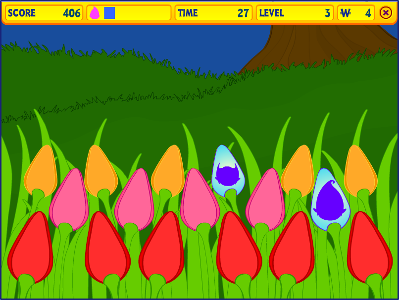
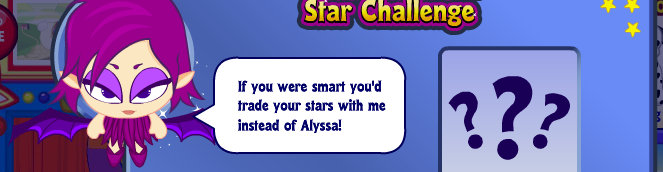
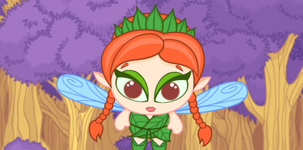
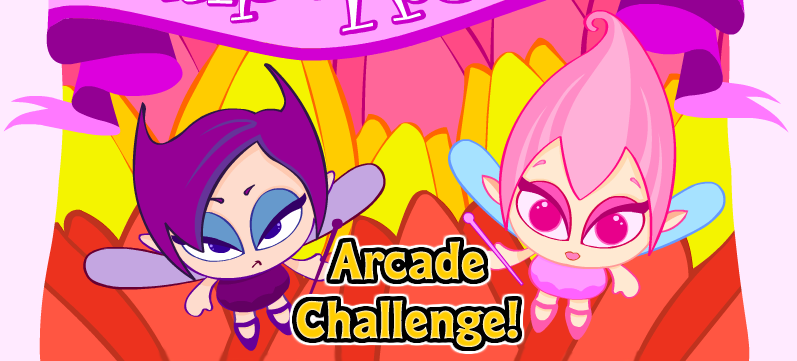

Maddie





Who are these fairys I keep putting in all my labs?
The Webkinz fairies are characters in Webkinz World featured in games such as Alyssa’s Star Challenge, Fairy Falls, and Tulip Trouble 2. Nafaria is a bad fairy associated with bad decisions, losing in games, and occasionally tricking players. Alyssa is a helpful fairy with two outfits: a blue one for Alyssa’s Star Challenge and a green one for Fairy Falls. Both games are located in the Magical Forest. Maddie and Nafaria appear in the arcade game Tulip Trouble 2, where Maddie, a pink good fairy, helps the tulips bloom.
Maddie
Nafaria

Alyssa

Now that you've met the fairies, help them grow a tree!🧚🌳🧚